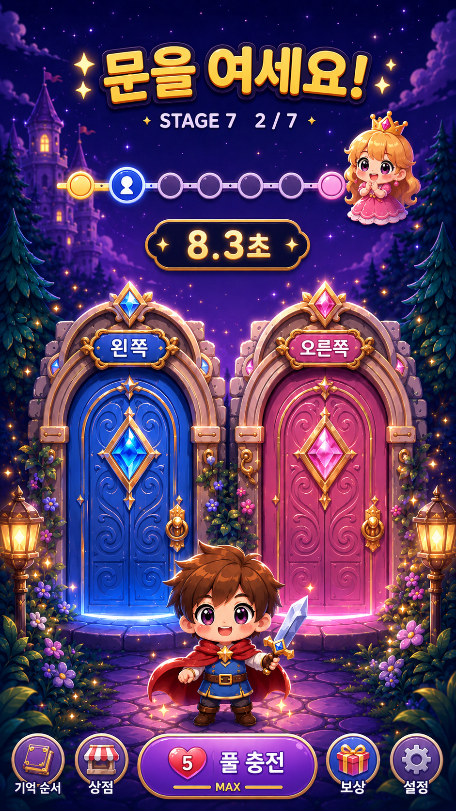
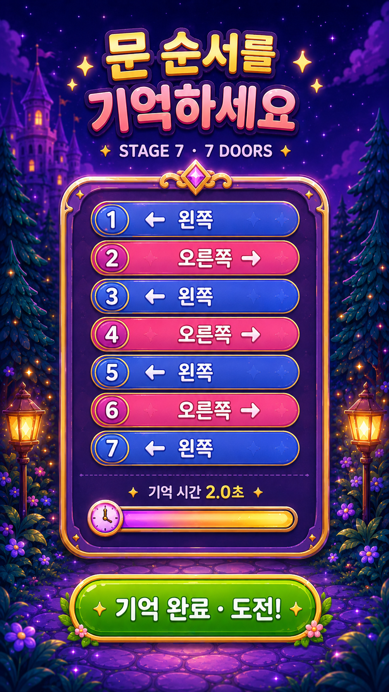
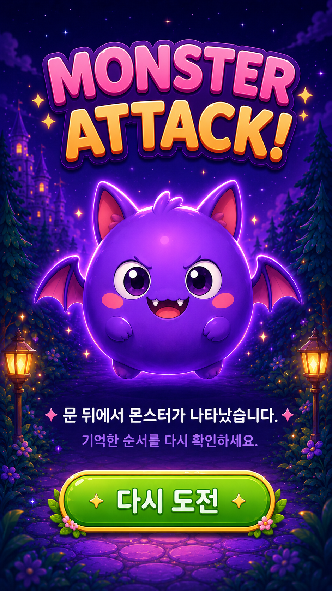
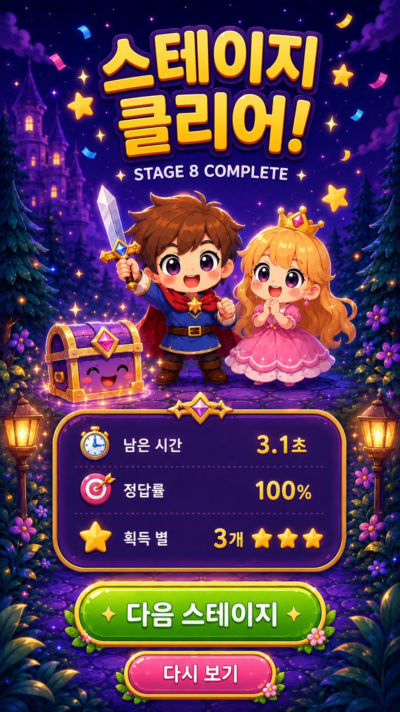

1. 게임 플레이 화면

핵심: 귀여운 판타지 세계관양문 구조좌/우 라벨 명확화
- 문 디자인을 보석/금장식 느낌으로 고급화
- 용사/공주를 chibi 스타일로 통일
- 상단 진행 UI와 타이머 가독성 강화
2. 기억 화면

핵심: 순서 가독성컬러 구분버튼 CTA 강화
- 사용자가 빠르게 좌/우 순서를 외울 수 있게 배열
- 보랏빛 배경 유지 + 밝은 텍스트 대비 강화
- 하단 액션 버튼을 크게 유지
3. 몬스터 어택 화면

핵심: 귀여운 몬스터경고성 유지과도한 중첩 제거
- 동그라미 placeholder 제거
- 몬스터 캐릭터를 완성형 일러스트로 노출
- 텍스트와 캐릭터가 겹치지 않도록 배치
4. 스테이지 클리어 화면

핵심: 보상감승리 피드백다음 진행 유도
- 공주와 용사의 감정 표현 강화
- 리워드와 다음 진행 버튼 시각 강조
- 너무 무거운 연출 대신 가벼운 파티클 사용
구현 우선순위
1) 시안 에셋 반영 → 2) 오디오 lifecycle 수정 → 3) 터치 반응성 유지 → 4) 빌드 및 용량 최적화 → 5) APK 재빌드
권장 에셋 사용 형식: assets/mockups/webp/*.webp